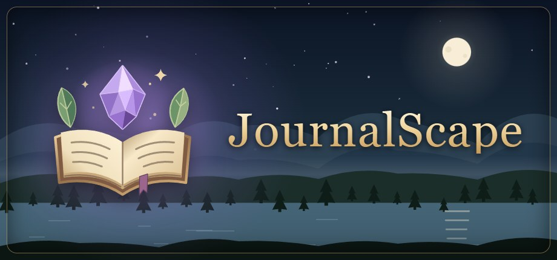
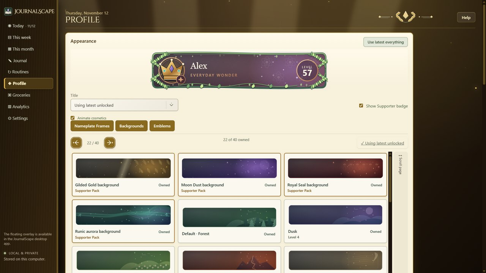
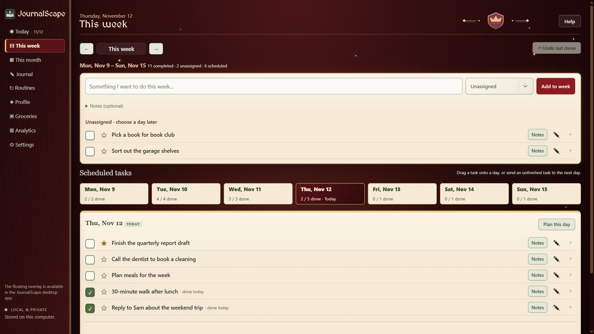

Plan your day. Write your story.
JournalScape is a planner, to-do list and daily journal for Windows, like a traveller's journal for your days. Plan your week, check things off, write about your day, and earn levels and titles as you finish real things in your life.
What it does
- Today and This week: plan tasks by day, keep simple daily routines, and check them off.
- A daily journal: write about your day; each entry is saved to its date, and you can reopen and search past entries.
- Levels and titles: every finished task earns XP toward levels, titles, nameplates and banners.
- Groceries and checklists: keep your usual items, build a trip, and check it off in the store.
- A daily boost: a quote of the day, a word of the day, and "on this day" in history.
- Always-on-top checklist: a small overlay keeps today's list beside your work.
- Calendar view: a month view that can show holidays, calendar files you import, and, if you choose, your Google Calendar events.
- On your phone: an optional phone companion for today's tasks, routines, journal and groceries, syncing through a private folder in your own Google Drive.
Google Calendar (optional)
If you connect your Google account, JournalScape reads your calendar list and events so it can show them in its Month view. It asks only for read-only access: it never creates, changes or deletes anything in your Google account. Your events stay on your own computer and are never sent anywhere else. You can disconnect at any time.
Read the full privacy policy.
Private by design
JournalScape has no accounts, no servers of its own, no ads and no tracking. Everything you plan is stored on your own computer, and, only if you turn on phone sync, in a hidden JournalScape folder in your own Google Drive that no one else can see.
A look inside







The Moonbound, Runic aurora, Gilded laurel and Founding seal looks are part of the optional Supporter Pack. Everything you earn by finishing tasks stays free.